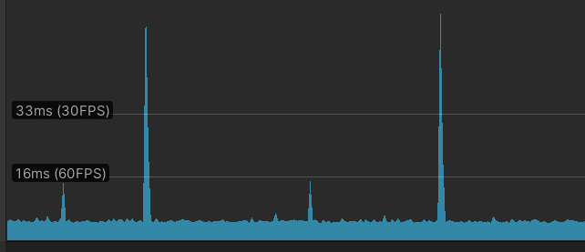

Unity脚本中的性能优化-2
GameObject
GameObject空引用检查
与典型的C#对象相比，GameObject和MonoBehaviour是特殊对象，因为它们在内存中有两个表示：一个存在于管理C#代码的相同系统管理的内存中，C#代码是用户编写的托管代码，而另一个则在另一个单独处理的内存空间中(本机代码)。数据可以在两者之间移动，但每次都会导致额外的CPU开销和可能的额外内存分配。这被称为跨越本机-托管的桥接，在这种情况下可能会为对象的数据造成额外的内存分配以便于跨桥复制，之后再共通过gc进行内存清理。
而对GameObject的简单空引用检查会造成这种额外的开销
1 | if(gameobject != null) |
另一种则是System.Object.ReferenceEquals()，它作用与前者相同，但速度大约是前者的两倍
1 | if(!System.Object.ReferenceEquals( gameObject, null)) |
这适用于GameObject，MonoBehaviour，甚至包括其他Unity对象，这些对象既有原生的也有托管的表现形式，比如WWW类。这个做法能提升的性能很少，但是经常出现。
避免从GameObject取出字符串属性
从GameObject中检索字符串属性是一种意外跨越本机-托管桥接的微妙方式，GameObject中受此行为影响的两个属性是tag和name，因此应该只在性能无关紧要的地方使用，比如脚本编辑器。而Tag通常用于对象的运行时标识，如下代码就会在每次迭代中导致额外内存分配：
1 | for(int i =0; i < listOfObjects.Count; i++) |
根据对象的组件和类类型来标识对象，以及标识不涉及字符串对象的值是更好的选择。我们的目的是希望避免本地-托管桥接的开销成本。tag属性最常用于比较，而GameObject中的CompareTag()方法可以避免本地-托管的桥接
1 | const int numTests = 1000000; |

向CompareTag()传递字符串字面量时，会在应用程序初始化期间分配这样的硬编码字符串，在运行时只是引用它们，所以不会导致运行时内存分配，应该尽量使用CompareTag()，因为name属性没有对应的方法，所以应尽可能使用tag。
合适的数据结构
C#在System.Collections命名空间中提供了许多数据结构，其中较为常用的是列表(List
当需要快速找出哪个对象映射到另一个对象，同时还能遍历组时，通常组合使用，在列表和字典中存储数据。这需要额外的内存开销来维护多个数据结构，插入和删除操作需要每次从数据结构中添加或删除对象，但迭代列表的好处和迭代字典形成鲜明的对比。
避免运行时修改Transform的父节点
Unity5.4之后，Transform组件的父子关系操作起来像动态数组，将所有共享相同父元素的Transform按顺序存储在预先分配的内存缓冲区内的内存中，并在Hierarchy窗口中根据父元素下面的深度进行排序。这允许在整个组中进行更快的迭代，对物理和动画等多个子系统特别有利，但缺点是若将一个GameObject的父对象重新制定为另一个对象，父对象必须将新的子对象放入预先分配的内存缓冲区，并根据新的深度对所有Transform排序。另外，若父对象没有预先分配足够的空间来容纳新的子对象，就必须扩展缓冲区。
通过GameObject.Instantiate()实例化新的GameObject时，它的一个参数是希望将GameObject设置为其父节点的Transform，默认值为null，即把Transform放在Hierarchy窗口的根目录下。在Hierarchy窗口下的所有Transform都需要分配一个缓冲区来存储它当前的子元素以及以后可能添加的子元素(子Transform不需要)，但若在实例化之后立即将Transform的父元素重新修改，将丢弃刚才分配的缓冲区，为了避免这种情况，应将父Transform参数提供给GameObject.Instantiate()调用，它跳过了这个缓冲区分配步骤。
另一种方法是让根Transform在需要之前就预先分配一个更大的缓冲区，这样就不需要再同一帧中拓展缓冲区，给它重新指定另一个GameObject到缓冲区中。这样就可以通过Transform组件中的hierarchyCapacity属性来实现。
注意缓存Transform的变化
Transform组件只存储与其父组件相关的数据。所以访问和修改Transform组件的position、rotation和/或scale属性会导致大量未预料到的矩阵乘法计算，从而通过其父Transform为对象生成正确的Transform表示；同时，使用localPositon、localRotation和localScale的的相关成本相对较小，这些值直接存储在给定的Transform中，可以直接检索。因此应该尽可能使用本地属性值。但将数学计算从世界空间更改为本地空间会导致挺多问题。
不断更改Transform组件属性的另一个问题是，也会向组件(如Collider、Rigidbody、Light和。Camera)发送内部通知，这些组件也必须处理，因为物理和渲染系统都需要直到Transform的新值，并相应地更新。
在复杂地事件链中，可能会在同一帧多次修改Transform的值，每次都会触发内部消息。因此应尽量减少修改Transform属性的次数，方法是将它们缓存在一个成员变量中，只在帧末尾提交
1 | private bool _positionChanged; |
这段代码仅在下一个FixedUpdate()方法中提交对position的更改。这些内容事件的目的是确保物理和渲染系统始终与当前Transform状态保持同步。